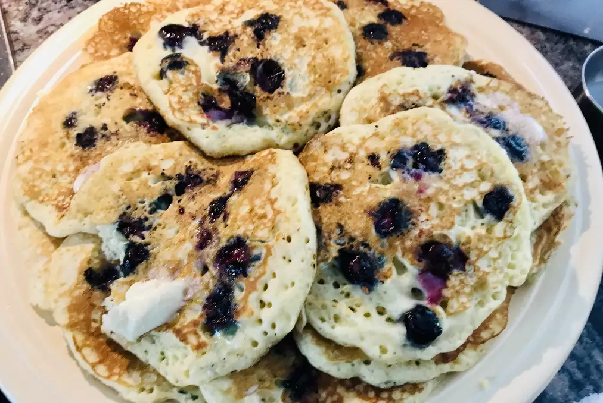

Buttermilk Pancakes

Delicious buttermilk pancakes
These pancakes made with fresh buttermilk are sure to be a hit. For a twist,
add fresh blueberries!
Ingredients
- 3 cups all-purpose flour
- 3 tablespoons white sugar
- 3 teaspoons baking powder
- 1 1/2 teaspoons baking soda
- 3/4 teaspoon salt
- 3 cups buttermilk
- 1/2 cup milk
- 3 eggs
- 1/3 cup butter, melted
Steps
- In a large bowl, combine flour, sugar, baking powder,
baking soda, and salt. In a separate bowl,
beat together buttermilk, milk, eggs and melted butter.
- Heat a lightly oiled griddle or pan to medium high heat.
Will be ready when a drop of water sizzles
- Pour the wet mix into the dry mix and mix until just blended.
- Drop batter to griddle using about 1/2 cup for each pancake.
Cook until bubbles appear on surface (about 1-2 minutes) and
flip.